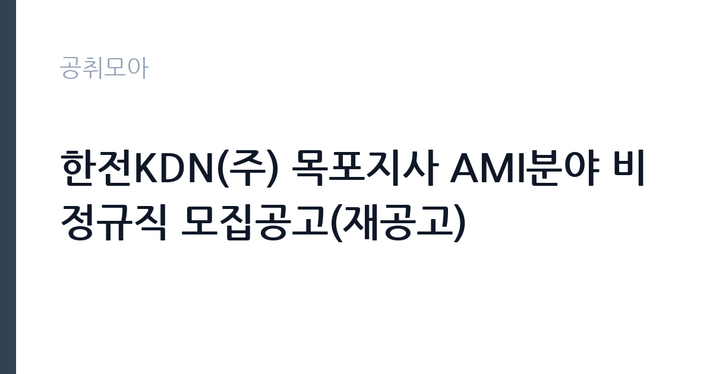

[공공기관] 한전KDN(주) 목포지사 AMI분야 비정규직 모집공고(재공고)
한전KDN · 전남광주 · 마감 2026-10-06 (D-15) · 출처 잡알리오

한눈에 보는 모집 조건
| 기관 | 한전KDN |
|---|---|
| 공고명 | 한전KDN(주) 목포지사 AMI분야 비정규직 모집공고(재공고) |
| 고용형태 | 정규직 |
| 근무지 | 전남광주 |
| 게시일 | 2026-09-22 |
| 마감일 | 2026-10-06 (D-15) |
지원자격, 이렇게 읽으세요
- 공공기관 채용공시
- 세부 조건은 원문 공고문 확인
이 공고의 지원자격은 거주지 제한이 핵심 변수다. 주민등록상 주소지가 광주·전남이어야 하므로, 타 지역 거주자는 지원 자체가 안 된다. 장애인 복지카드 소지도 필수 조건이다. 기초안전보건교육은 미이수자라도 이수 가능하면 지원할 수 있다. 병역의무 불이행 사실이 없어야 하고, 한전KDN 인사규정의 채용결격사유에 해당하지 않아야 한다. 운전 관련 조건은 진주 공고와 달리 명시되지 않았으므로, 현장 이동 방식은 원문에서 확인해야 한다.
이 공고의 포인트
재공고라는 사실 자체가 정보다. 1차에서 미달이 났다면 이번에는 지원자 풀이 얇을 가능성이 있고, 요건이 일부 조정됐을 수도 있다. 1차 공고문을 봤던 사람도 이번 공고문을 처음부터 다시 읽어야 한다. 광주·전남 거주 장애인으로 한정한 지역·전형 조건 덕분에 경쟁 구도가 좁혀지는 것도 기회 요인이다. 목포 지역 근무라 전남 서남권 거주자에게 출퇴근이 수월하다.
전형은 어떻게 진행되나
전형은 서류전형과 면접전형으로 진행되는 것이 일반적이다. 재공고는 결원 충원이 급하므로 일정이 빠르게 돌아갈 수 있다. 서류에서는 거주지와 장애인 여부, 교육 이수(가능) 여부를 확인하고, 면접에서는 현장 투입 가능성과 근무 의지를 평가한다. 제출 서류로 주민등록초본과 복지카드 사본, 교육 이수증이 필요할 수 있으므로 미리 준비해야 한다.
원문에서 확인한 전형 방식
- 일반 : 학력, 연령, 외국어 제한 없음 - 병역 : 병역법 제76조에서 정한 병역의무 불이행 사실이 없는 자 - 자격 : 복지카드(장애인) 소지자 건설업 기초 안전보건교육 이수자 또는 이수 가능자 - 기타 : 당사 인사규정2.1.4(채용결격사유)에 해당하지 않는자(붙임1 참조) 주민등록상 주소지가 광주/전남지역인 자
이런 분께 추천해요
- 광주·전남에 주민등록을 둔 장애인 중 현장 근무가 가능한 사람
- AMI나 계량기, 통신 설비 관련 현장 경험이 있는 사람
- 목포·무안·나주 등 전남 서남권 거주로 출퇴근이 수월한 사람
지원 전 체크리스트
- 주민등록상 주소지가 광주·전남인지 주민등록등본으로 확인한다
- 장애인 복지카드의 유효 상태를 점검한다
- 기초안전보건교육 이수증을 준비하거나 교육 일정을 잡는다
- 1차 공고와 달라진 요건이 있는지 이번 공고문을 처음부터 다시 읽는다
모집 일정과 제출 타이밍
접수는 2026년 10월 6일에 마감된다. 재공고는 일정이 촉박하게 진행되는 경우가 많아 서류와 면접이 10월 초에 압축될 수 있다. 계약 기간과 연장 가능성, 현장 투입 시점은 원문 공고문의 근무조건 항목에서 확인해야 한다. 교육 미이수자는 합격 전후로 교육 일정을 맞춰야 한다.
직무 이해하기: 공공기관
목포지사 AMI 업무는 전남 서남권 가구의 지능형 검침망을 넓히는 일이다. 전력량계 모뎀 설치와 통신 상태 점검, 고장 모뎀 교체가 기본 업무이며, 설치 실적 입력과 간단한 고객 안내가 곁들여진다. 도서·농어촌 지역 출장이 섞일 수 있어 이동이 잦은 편이다. 재공고 포지션이라 즉시 투입 가능한 인력을 선호할 가능성이 크므로, 첫날부터 현장에 나갈 수 있다는 태도가 중요하다.
자기소개서 작성 팁
지원 서류에서는 즉시 투입 가능함을 어필해야 한다. 현장·방문 업무 경험과 안전교육 이수, 광주·전남 거주로 인한 지리 익숙함을 앞세우는 것이 좋다. 재공고 지원이라면 왜 이 일을 지속할 수 있는지, 단기 이탈하지 않겠다는 의지를 담담하게 밝히는 구성이 설득력이 있다. 분량이 짧아도 오탈자 없는 정돈된 문서를 내야 한다.
면접 준비 포인트
면접에서는 근무 지속 의지를 집중적으로 본다. 재공고 자리인 만큼 왜 이전에 채워지지 못했는지를 역으로 생각하고, 본인이 오래 일할 수 있는 이유를 준비해야 한다. 현장 근무 가능 여부와 이동 수단, 고객 응대 태도도 확인한다. 목포 지역 연고나 거주 안정성을 언급하면 신뢰도가 올라간다.
급여·근무조건 읽는 법
정확한 보수액은 원문 공고문의 보수 항목에서 확인해야 한다. AMI 현장 비정규직은 일급 또는 월급 형태로 지급되는 것이 일반적이며, 출장·이동 관련 실비 정산 방식은 공고마다 다르므로 원문에서 확인하기 바란다. 4대보험 적용 여부도 원문에서 확인해야 한다. 경쟁률과 합격선은 공개되지 않으므로 원문에서 확인해야 한다.
자주 묻는 질문
- 재공고라서 조건이 달라졌나요?
재공고에서는 응시요건이나 근무조건이 조정되는 경우가 있다. 1차 공고문을 기준으로 판단하지 말고 이번 공고문을 처음부터 다시 읽어야 한다. - 광주·전남 거주가 필수인가요?
주민등록상 주소지가 광주·전남인 사람으로 제한되어 있다. 타 지역 거주자는 지원할 수 없으므로 등본으로 미리 확인해야 한다. - 학력·나이 제한이 정말 없나요?
공고문에 학력·연령·외국어 제한 없음이 명시되어 있다. 다만 장애인 복지카드와 교육 이수, 결격사유 없음은 필수 조건이다.
함께 보면 좋은 공고
[공공기관] 한국토지주택공사 개방형 직위(감사실장, 준법감시관) 공모 — 마감 2026-10-07[공공기관] 한국도로공사 비상임이사 공모 — 마감 2026-09-29[공공기관] 2026년 하반기 2차 중소벤처기업진흥공단 체험형 청년인턴(장애인) 채용 공고 — 마감 2026-10-12출처: 잡알리오 공개정보를 바탕으로 공취모아가 정리한 안내글입니다. 모집 조건·일정은 변경될 수 있으니 지원 전 반드시 원문 공고문을 확인하세요. 본 글은 정보 제공용이며 합격을 보장하지 않습니다.